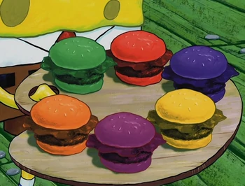
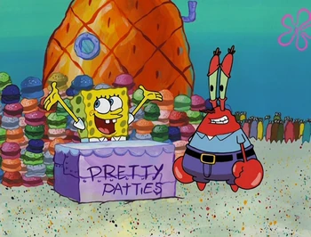

Krabby Pretty Patty

Want to make a dish from under the sea come to life?
Pretty Patty Formula Ingredients
- 200g vegetables, shredded/chopped
- 200g legumes/potato, cooked
- 100g brown rice, cooked
- 50-80g binder of choice (ground oats/flaxseed)
- 2 Tbsp of vital wheat gluten
- To taste kosher salt
- As needed neutral oil
- Pretty buns (see recipe below), halved
- Vegan 'Cheese' (see recipe below)
Pretty Buns Ingredients
- 510g bread flour
- 10g instant yeast
- 30g sugar
- 275g water + more for brushing
- 60g neutral oil
- 2 tsp kosher salt
- Food coloring as needed: red, orange, green, blue, yellow, red, purple
- As needed white sesame seeds
Vegan 'Cheese' Ingredients
- 365g water, cold
- 2 Tbsp + 1 tsp kappa carrageenan
- 200g cashews, rinsed
- 200g refined coconut oil
- 100g sauerkraut/pickle brine
- 25g nutritional yeast
- 25g tapioca or arrowroot starch
- 15g lemon juice
- 2 tsp kosher salt
- 1 1/2 tsp onion powder
- 1 tsp garlic powder
- As needed food coloring: red, green, orange, yellow, purple, blue
Pretty Patty Formula Directions
- Combine the cooked vegetables, legumes/potato, brown rice, binder of choice,
vital wheat gluten, and salt in the bowl of a food processor. Process
the mixture until pebbly in texture, about 30 - 45 seconds.
If the mixture is too loose, add more binder as necessary.
- Shape the veggie mix into 2 ounce patties. Transfer the patties to a
parchment-lined sheet tray and refrigerate for at least 30 minutes
or until ready to cook.
- Preheat 2-3 teaspoons of oil in a large cast iron pan.
Add the veggies patties and cook for 3-5 minutes per
side or until heated through and lightly browned.
- Serve the patties inside of the Pretty Buns with a layer of Vegan Cheese.
Pretty Buns Method/Directions
- Combine all of the dry ingredients in the bowl of a stand mixer and whisk to combine.
Add the wet ingredients, save for the food coloring, and begin mixing the dough
using the dough hook attachment. Continue mixing the dough until it just comes together into
a homogenous mass, about 2-3 minutes.
- Continue kneading until the dough no longer sticks to the sides and is smooth in
texture (not ripping immediately), about 4-6 minutes.
- Divide the dough into 6 (300 gram) portions. Working with one piece at a time,
add the dough to the base of a food processor. Add as much food coloring as desired
and process until the dough is thoroughly colored. Repeat with the remaining colors
and dough portions.
- Transfer the colored doughs to 6 separate bowls. Cover and let the dough proof
for 1-2 hours or until roughly doubled in size.
- Divide each dough portion into 3 (100 gram) pieces. Shape the portions into
taught buns, see video for tips.
- Transfer the buns to two large sheet trays lined with parchment paper. Spray the
buns with a light layer non-stick spray and loosely cover with plastic wrap.
Allow the buns to proof at room temperature for 1 ½ - 2 ½ hours.
- Towards the end of proofing, preheat the oven to 350 °F.
- Brush the buns with water, then sprinkle with sesame seeds.
- Bake for 15-18 minutes, or until the bread's internal temperature reaches 200-210°F.
- Let cool completely on a wire rack.
Vegan Cheese Method/Directions
- Grease a large muffin tin with nonstick spray or plastic wrap.
- Combine the water and carrageenan in a pourable vessel. Whisk to combine, then set aside.
- Combine the remaining ingredients in the base of a high-powered blender.
- Add the carrageenan mixture to the blender, then blend the mixture for 1 minute or
until completely smooth.
- Pour the mixture into a large high-walled skillet.
- Heat the mixture over medium heat, while stirring consistently, until it reaches
82°C/180 °F. If the sauce mixture breaks, use a stick immersion blender to recombine.
- Optional: pour the mixture into 6 bowls, color each bowl with a different color.
- Pour the colored mixtures into the prepared muffin tin. Allow the cheese to cool
to room temperature, then refrigerate for at least two hours before slicing.
- When ready to slice, unmold the cheeses and slices as desired. Wrap the remaining
cheese in plastic wrap and refrigerate for up to 5 days.

And thats it! Enjoy your DELICIOUS PRETTY PATTIES!
Back to Main Page